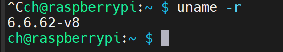
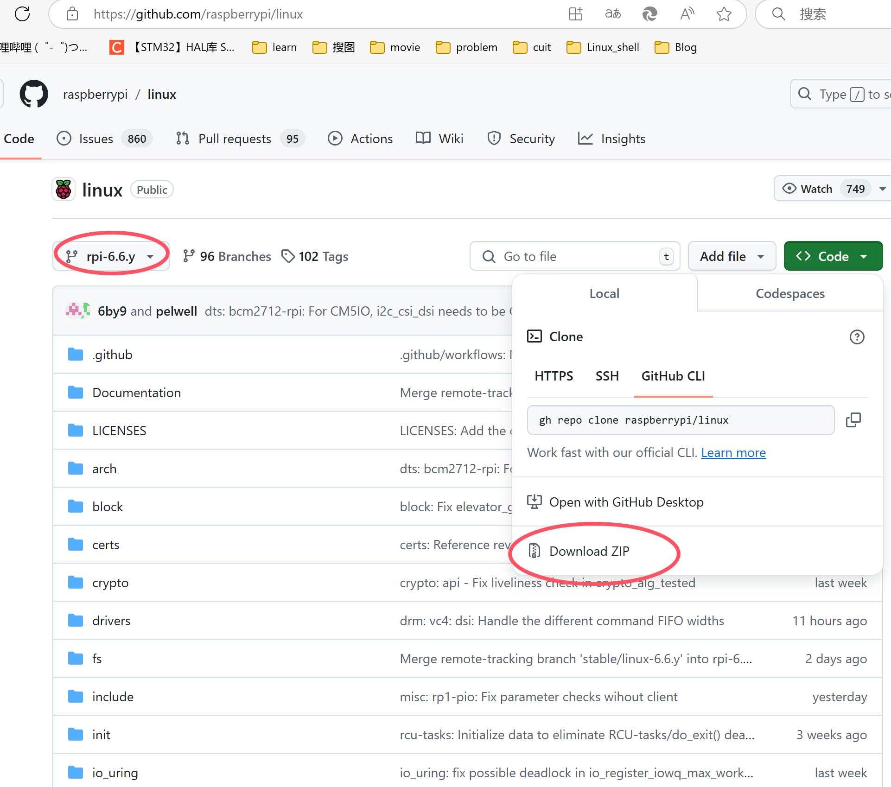
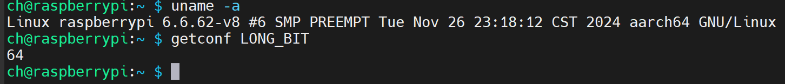
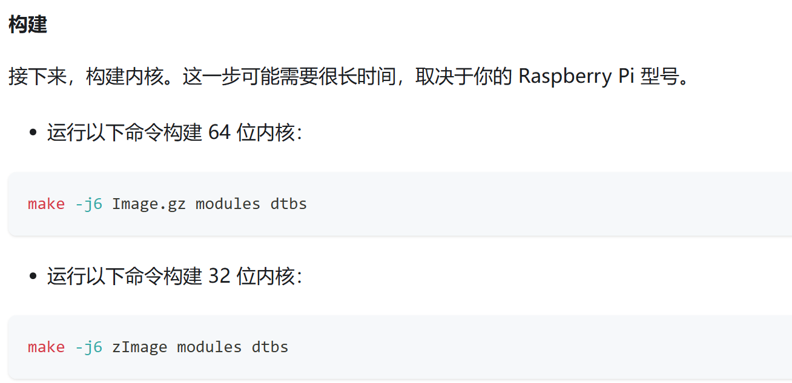
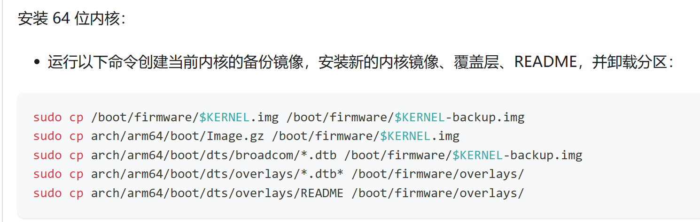

前言
说实话，这个环境搭建真的要把我折磨死了（虽然是因为我对驱动编译的流程太不熟悉了），最终在11月27日的上午实现第一个helloworld驱动，泪目了。
其实本来打算做交叉编译的，不断在网上找教程搞了一周也没弄出来，这才意识到自己好像有点太急了，于是降低目标，进行树莓派本地驱动编译环境搭建。
所需准备
对于驱动编译，你首先得有
内核源码,而且必须与你当前内核版本相同
编译工具，本地编译还挺容易获取的，但是如果是交叉编译的话，得自己去找。
内核源码获取
正常来说，从官网获与你当前内核版本相同的源码即可，但是我并没有成功，于是我将从官网下载的内核源码编译并生成了一个新内核，然后替换当前内核，
这样我的内核版本和源码就是是相同版本了（这在有些教程中是有的，不过我刚开始一直不明白为啥也替换内核，导致走了很多弯路）。
首先在树莓派中执行
uname -r

这就是你当前内核的版本，然后到官网的Linux下点开
然后选项对应的版本，下载ZIP，然后通过U盘或者FTP等把ZIP传到树莓派中。
补充：其实我最开始
uname -r出来的版本是6.6.51 然后使用rpi-6.6.y的内核源码编译通过了，最后在加载驱动的时候出现了insmod: ERROR: could not insert module hellodriver.ko: Invalid module format,一搜说可能是内核
版本和源码不同。
在树莓派中将源码解压到 /usr/src/ 目录下，现在源码就已经有辣。
unzip rpi-6.6.y.zip -d /usr/src/
unzip zip_file -d /path/to/directory 指定解压文件的目标目录
编译工具获取
【注】我觉得这可能是交叉编译所用的，因为后面构建内核并没有指定编译器，目前还没搞清楚。
此处暂无交叉编译工具获取教程，我还没试过，等后面再弄。
首先确定当前树莓派系统是32位还是64位，可以看到是64位的。
getconf LONG_BIT

构建内核
首先对内核进行配置，一般使用厂家的config配置文件。
进入内核源码目录cd /usr/src/rpi-6.6.y/配置内核参考连接KERNEL=kernel8
make bcm2711_defconfig然后会在当前目录生成一个
.config文件，里面就是内核相关配置。为了
在替换完内核后，防止内核覆盖 /lib/modules 中的现有模块，在uname
输出中说明运行的是自己的内核,打开.config文件，修改下面一行，在后面添加-MY_CUSTOM_KERNELCONFIG_LOCALVERSION=”-v8l-MY_CUSTOM_KERNEL”
进行构建内核。这可能要花上两个多小时
我执行的是sudo ARCH=arm64 CROSS_COMPILE=aarch64-linux-gnu- make -j6 Image.gz modules dtbs
其实如果你是直接在树莓派本地运行的话，是不用选择交叉编译器，即不指定CROSS_COMPILE。然后接下来，将内核模块安装到启动媒体上：
sudo make -j6 modules_install。一定要有这一步，
如果没有这一步树莓派就没有一些基础的驱动。安装内核,我是64位的。
第3句命令可能需要改以下：让那些文件复制到一个备份文件夹内sudo cp arch/arm64/boot/dts/broadcom/*.dtb /boot/firmware/$KERNEL-backup2/sudo cp /boot/firmware/$KERNEL.img /boot/firmware/$KERNEL-backup.imgsudo cp arch/arm64/boot/Image.gz /boot/firmware/$KERNEL.imgsudo cp arch/arm64/boot/dts/broadcom/*.dtb /boot/firmware/$KERNEL-backup2/sudo cp arch/arm64/boot/dts/overlays/*.dtb* /boot/firmware/overlays/sudo cp arch/arm64/boot/dts/overlays/README /boot/firmware/overlays/然后重启设备
sudo reboot。设备重启后，查看当前版本uname -r如果版本变成了CONFIG_LOCALVERSION设置的值，那么就成功了。
如果一直无法重启。可以将内存卡插入U盘，电脑读取U盘。然后在最顶层目录可以找到一个config.txt的文件，修改kernelkernel=my-backup.img,
my-backup.img为你刚才备份的$KERNEL-backup.img。这样系统又是原本的内核。
编译hello驱动
待写…